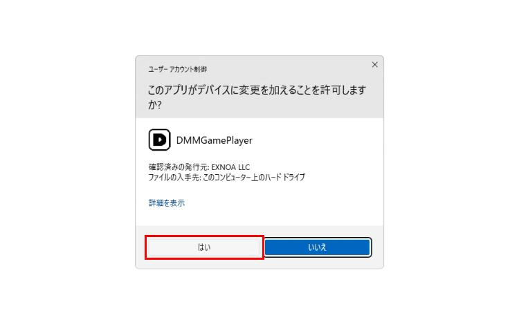
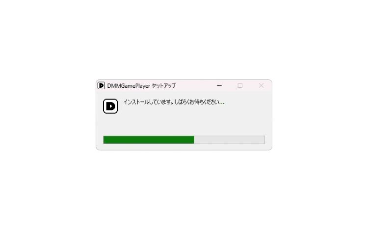

DMMGAMES 从零上手：注册、安装、下载游戏一把梭
想玩舰C、刀乱、鲁鲁修 Lost Stories 这些 DMM 独家游戏却不知道从哪下手？这篇教程带你走完注册到启动第一款游戏的完整流程，顺便讲清新手最容易踩的几个坑。
这篇教程带你从注册 DMM 账号、安装 GAME PLAYER，到下载启动第一款游戏，走完 DMMGAMES 完整上手流程。读完你就能独立把任何一款 DMM 独家游戏拉到自己电脑上跑起来。
准备工作：你需要知道的几件事
DMMGAMES 是日本 DMM 集团旗下的游戏分发平台，发行了舰C、刀剑乱舞、碧蓝档案 DMM 版、赛马娘 DMM 版等大量二次元游戏，最近还拿到了《鲁鲁修》IP 改编手游 Lost Stories 的日本地区独家发行权。它和 Steam、Epic 不同的地方在于——很多游戏只有 DMM 渠道才能玩到，尤其是 PC 端入口。
平台支持 Windows 和 macOS 双端，手机端有独立的 STORE APP（iOS / Android）。免费游戏直接领，付费游戏走 DMM 点或信用卡购买。中文玩家不用翻墙，免费区全球可玩。
第一步：注册 DMM 账号
打开 DMMGAMES官网，点右上角的登录按钮。DMM 提供四种注册方式——邮箱 + 密码，或者 Google 账号、LINE ID、Apple ID 三种第三方快捷登录。
推荐用 Google 账号一键注册。流程最短：点「Google アカウントで登録」，弹出 Google 选择窗口，选你要用的账号，点「允许」授权 DMM 读取邮箱，自动就完成注册了，邮箱地址直接用 Google 账号的。之后每次登录也是一键点 Google 按钮，不用记密码。

如果你已经用邮箱注册过了也没关系——登录后进个人资料页面的「安全设置」，可以把 Google、LINE、Apple ID 绑定到同一个账号上，以后就能用第三方方式快速登录。
第二步：安装 DMM GAME PLAYER
注册完账号，下一步装启动器 GAME PLAYER。它是 DMM 所有 PC 游戏的统一入口，负责下载、启动、更新、卸载。
去官方下载页面，Windows 用户下 .exe 安装包，macOS 用户下 .dmg。安装过程没什么花里胡哨的，Windows 一路下一步就行，macOS 把 GAME PLAYER 图标拖进 Applications 文件夹。
这里注意安装完第一件事先改下载目录。默认路径在 C 盘（Windows：C:\Users\<用户名>\AppData\Local\DMMGamePlayer\Games\；macOS：~/Library/Application Support/DMMGamePlayer/Games/），每款游戏占 1~20GB 空间，建议改到专门的游戏盘。进 GAME PLAYER 后点右上角设置图标，找「下载目录」选项改路径。

第三步：下载你的第一款游戏
GAME PLAYER 里有两个标签——「商店」和「我的游戏」。刚装完时「我的游戏」是空的，得先去商店里把游戏领回来。
打开「商店」标签，搜索你想玩的游戏名。注意很多游戏的商店页面是日文标题，搜英文名或中文别名也能搜到（比如搜「鲁鲁修」能找到 Code Geass Lost Stories）。
找到游戏详情页后，免费游戏直接点「ダウンロード」（下载）按钮，游戏瞬间进入「我的游戏」库。付费游戏需要先购买，购买完成后同样会自动进入库。
回到「我的游戏」标签，刚领的游戏卡片上显示「ダウンロード」按钮——这说明游戏所有权已经到你账号了，但本地还没下载。点一下按钮，GAME PLAYER 开始下载，卡片上实时显示进度条和文件大小。下载过程可以暂停、继续、取消。
下载完成后，按钮变成「起動」（启动）——点它就能开玩了。浏览器游戏会自动弹出窗口登录跳转，下载型游戏会启动本地 exe。
第四步：管理已下载的游戏
玩过一阵后你需要管管游戏库了——更新、隐藏、卸载，这三件事的区别新手很容易搞混。搞不懂的时候翻一下DMMGAMES文档，每种操作都有详细说明。
自动更新默认是开的。有新版本时游戏卡片右上角会出现黄色感叹号，GAME PLAYER 后台自动下载更新文件，下载完提示你重启应用更新。想关就去设置里找自动更新选项手动关掉，之后每次有新版自己触发更新。
利用停止（隐藏）适合暂时不玩但不想重下的情况。在游戏卡片上右键，选「ゲームの利用停止」。操作后游戏从「我的游戏」里消失，但文件还在磁盘上，随时可以恢复。恢复方法：游戏库页面视图切换里勾上「利用停止中」，找到后右键「利用再開」就行。
卸载（彻底删除）适合确定不再玩、想释放空间的情况。同样右键游戏卡片，选「アンインストール」，确认对话框点确定，GAME PLAYER 会删除游戏本体和配置文件。卸载完成后卡片变回「ダウンロード」状态——账号所有权还在，下次想玩重新下载就行。
这里要注意一个关键点：服务器端存档的游戏（舰C、刀乱、赛马娘 DMM 版、碧蓝档案 DMM 版等）无论卸载还是利用停止，游戏数据在服务器上，下次登录照样有。只有存档在本地的单机游戏卸载后进度会丢失，这种情况比较少见，卸载前留意一下游戏说明里的存档机制。
新手最容易踩的三个坑
第一个坑：分不清利用停止和卸载。很多人右键看到日文菜单就瞎点，不小心点了卸载把本地存档删了。记住一句话：想隐藏选「利用停止」，想清空间选「アンインストール」（卸载）。
第二个坑：下载目录没改导致 C 盘爆。DMM 游戏动辄几 GB 到二十几 GB，默认塞 C 盘，装个三五款就红了。装完启动器第一件事就是去设置里改路径，别等爆盘了才想起来。
第三个坑：付费环节区域风控被拦。DMM 对部分付费内容有区域检查，偶尔会对非日本 IP 的玩家弹窗阻拦。免费游戏完全没问题，付费被拦的话试试关掉代理、或者稍后再试。实在不行可以考虑用 DMM 点卡充值的方式绕开。
进阶：还有什么可以玩的
走完上面四步你已经能独立上手任何 DMM 游戏了。想深入的话，DMM 还有几个值得研究的功能——订阅制「GAME 遊び放題」（类似 Game Pass，订阅后库内出现包含的所有游戏）、My Game Center 跨设备游戏记录同步、以及手机端 STORE 和 PC GAME PLAYER 的账号互通。
另外，刚拿到独家发行权的 Code Geass Lost Stories 是目前 DMM 渠道的明星新游，繁体中文界面、免费区完整、PC 端只能走 DMM GAME PLAYER 下载，鲁鲁修 IP 粉丝可以直接冲。
这篇教程用到的所有资料，我分别同步到了 GitHub、Gitee 和 GitCode 上，国内读者访问不会有障碍，也方便随时提 issue 纠错。